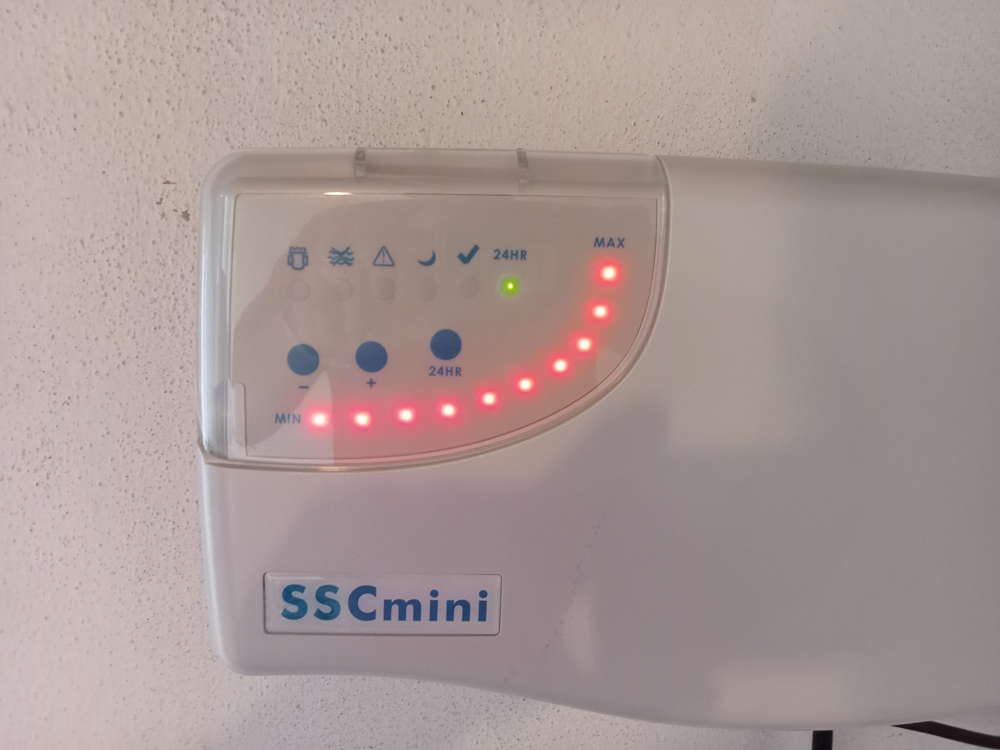
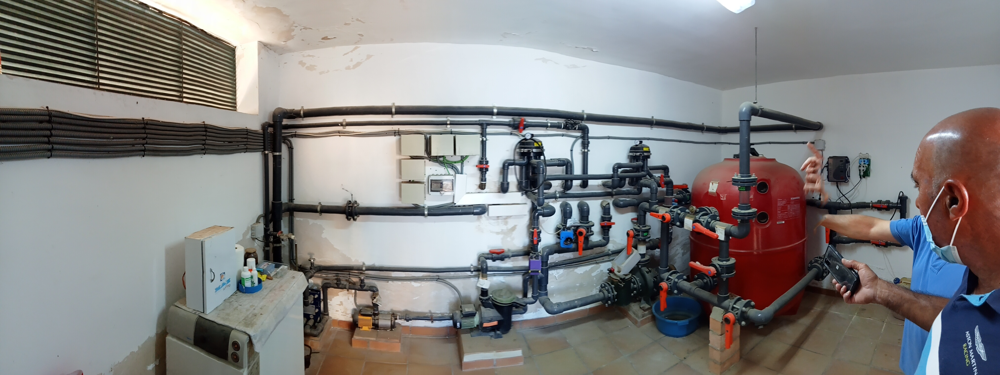
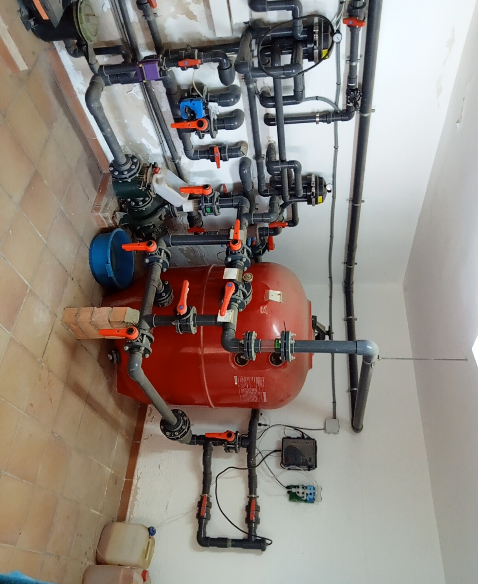
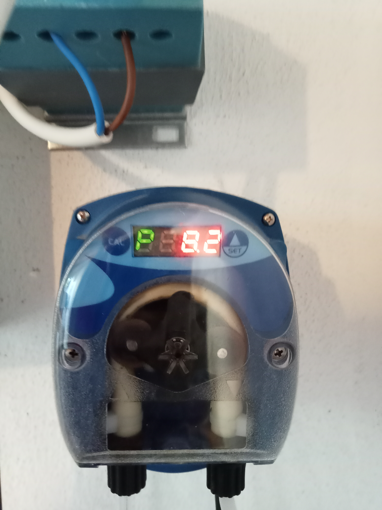

Volumen y uso
Las dimensiones, la ocupación y las condiciones de uso ayudan a determinar la capacidad de producción necesaria.
MRPOOL · TRATAMIENTO DEL AGUA
Una forma de generar el desinfectante en la propia instalación. Estudiamos tu piscina en Arcos y Cádiz para valorar el equipo, su integración y el control del agua.
Consultar mi instalación ↗
CÓMO FUNCIONA
El clorador utiliza la sal disuelta en el agua para producir cloro mediante electrólisis.
La célula se integra en el circuito de circulación. La producción se ajusta a las necesidades de la piscina y debe coordinarse con el funcionamiento de la depuración.
Una piscina de cloración salina sigue utilizando cloro como desinfectante. El sistema facilita su generación, pero el agua y los equipos siguen necesitando controles y mantenimiento.
ANTES DE ELEGIR UN EQUIPO
Las dimensiones, la ocupación y las condiciones de uso ayudan a determinar la capacidad de producción necesaria.
Revisamos bomba, filtro, tuberías y espacio disponible para integrar la célula y facilitar las revisiones.
Valoramos el seguimiento del desinfectante y del pH, y si conviene incorporar regulación automática.
DETALLES DE LA INSTALACIÓN
Filtración, circulación, cloración y regulación cumplen funciones distintas. Estas fotografías muestran la sala técnica y los equipos; las lecturas visibles corresponden al momento de la toma, no son valores de ajuste recomendados.



CUIDADOS QUE SIGUEN CONTANDO
La cloración salina no elimina el mantenimiento.
La cantidad de sal, la limpieza de la célula y los ajustes dependen del equipo. Se deben consultar sus instrucciones específicas.
PREGUNTAS HABITUALES
Se puede valorar tras revisar el circuito, los materiales y el espacio de la sala técnica. La adaptación concreta depende de cada instalación.
No. El equipo produce cloro a partir de la sal disuelta en el agua mediante electrólisis.
Depende del modelo y de los accesorios instalados. El control del pH puede requerir un regulador y una bomba dosificadora independientes.
El presupuesto depende del equipo, el volumen de agua, las adaptaciones del circuito y la regulación incluida. Envíanos medidas y fotos de la sala técnica para estudiar tu caso.
ARCOS · CÁDIZ
Envíanos la localidad, las medidas aproximadas de la piscina y fotografías del filtro, la bomba y las tuberías. Si ya tienes clorador, incluye una foto de su modelo.
Consultar por WhatsApp ↗